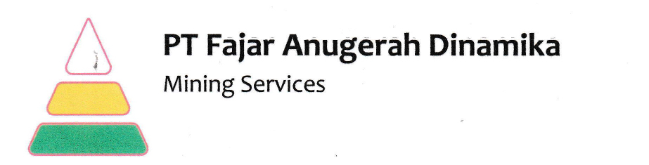

FAD-MAP
(Fajar Anugerah Dinamika Monitoring & Evaluation Productivity)
ANALISA PROBLEM PRODUCTIVITY
MAN
-- Kosong --
O1 : Opt Exca OJT
O2 : Opt DT OJT
O3 : Skill Opt
MACHINE
-- Kosong --
U1 : Boom Loader Low Power
U2 : Engine Loader Low Power
U3 : Tooth Bucket Problem
U4 : Loader Bersihkan Vessel Hauler
U5 : Track Problem
H1 : DT Amblas-amblasan di Disposal
H2 : DT Refueling
H3 : DT Kurang (Breakdown)
H4 : DT Kurang (Jarak Buang Jauh)
H5 : DT Kurang (No Oprator)
H6 : Opt DT Menghadap
H7 : Opt DT Cek Fatigue
H8 : Opt DT Ambil MK
H9 : Opt DT ke Toilet
H10 : DT Kerok Vessel
H11 : DT Masuk PIT Stop
MATERIAL
-- Kosong --
M1 : Non Volume
M2 : Material Boulder - Blasting
M3 : Material Keras - Blasting
M4 : Material Keras - Blasting - Ripping
M5 : Material Keras - Non Blasting - Non Ripping
M6 : Material Keras - Non Blasting - Ripping
M7 : Material Lumpur
M8 : Material Tipis
M9 : Material Clearing
M10 : Material Longsoran
METHOD
-- Kosong --
L1 : Double Bench
L2 : Drop Cut
L3 : Top Loading
L4 : Back Loading
L5 : Drop Cut (Mencangkul)
L6 : Selective Loading
ENVIRONMENT
-- Kosong --
D1 : Disp. Crowded
D2 : Disposal Lembek/Berair/Licin/Amblas
D3 : Disposal Undulating
F1 : Front Undulating
F2 : Front Menanjak
F3 : Front Melorong
F4 : Front Berdebu
F5 : Front Crowded
F6 : Front Lembek/Licin/Berair /Amblas
F7 : Front Sempit
F8 : Dudukan PC Lembek
R1 : Road Berdebu
R2 : Road Undulating
R3 : Road Berkabut
R4 : Road Crowded
R5 : Road Licin
R6 : Road Rusak
R7 : Road Sempit
R8 : Road Maintenance
MULAI ULANG
SUBMIT ALL